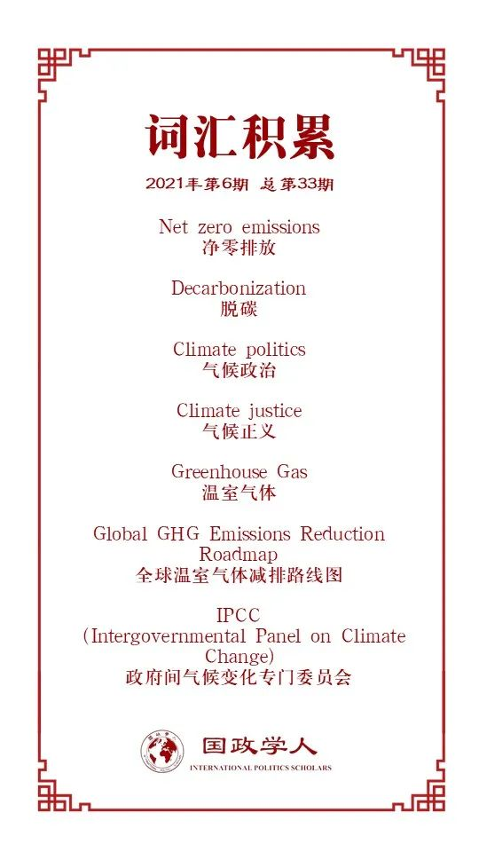

收录于合集

作品简介
【作者】 Matthew Paterson，英国曼彻斯特大学社会科学学院政治系教授
【编译】 黄慧彬（国政学人编译员，复旦大学国际关系与公共事务学院硕士研究生）
【校对】 程朵依
【审核】 邵良
【排版】 韩柯
【美编 】杜丛竹
【来源】 Matthew Paterson (2021) Climate change and international political economy: between collapse and transformation, Review of International Political Economy , 28:2, 394-405, DOI: 10.1080/09692290.2020.1830829
【归档】 《国际关系前沿》2021年第6期，总第33期。
期刊简介
《国际政治经济学评论》（ Review of International Political Economy ）, 创立于1994年，是一本以国际政治经济学为主要内容的同行学术评审杂志。2019-2020年的影响因子为3.610。
气候变化与国际政治经济学：
**崩溃与转型之间
**
Climate change and international political
economy: between collapse and transformation
Matthew Paterson
内容提要
在过去十年里，气候政治的发展给政治经济学带来了两方面的挑战。一方面，“净零排放（net zero emissions）”的新科学使人们越来越认识到，必须追求一个没有化石燃料的世界，但这同时也会带来彻底的变革。另一方面，文明的崩溃使得气候政治议题变得更加尖锐，变革迫在眉睫。本文认为，国际政治经济学的一些理论主张能够为此提供参考，有助于理解寻求变革的道路的关键挑战。对于国际政治经济学的学者来说，如何调用知识应对挑战便成了最核心的问题。
文章导读
在国际政治经济学的研究之中，气候变化占有一席之地，但同时研究中也存在两个盲点。首先，迄今为止，国际政治经济学仍将气候变化研究置于相对边缘的位置；更为重要的是，国际政治经济学没能把握气候政治在过去10年内的两个根本转变，也没能把握其对理论和实践的意义。 第一个转变在于人们越来越意识到有力地应对气候变化需要进行深刻的社会变革；第二个转变在于人们更深刻地认识到如果不进行变革将会付出灾难性代价——至少是人类苦难和退化的急剧扩大，以及人类文明本身的潜在崩溃。
转型还是崩溃，是当今全球政治经济未来的严峻抉择。 一方面,国际政治经济学的理论有助于理解驱动人类社会走向的动态力量，这种力量决定着人类社会走向崩溃还是转型,走向什么样的崩溃或转型,以及这会给人类繁荣、不平等、暴力、权力关系、民主政治生活带来什么样的后果。另一方面，无论是转型还是崩溃，国际政治经济学的核心理论和规范承诺都不可能不受影响。本文着重讨论第一个方面的内容。
01
气候变化的转型 Transformative climate change
现在气候变化被广泛理解为一种挑战。然而直到2007年，主流观点仍认为全球温室气体排放需要减少80%左右，以避免“对气候系统的危险的人为干扰”。到了2014年，根据联合国政府间气候变化专门委员会（IPCC）第五次评估报告，主流观点才转变为需要在 2050 年左右实现全球“净零排放”的目标。这是一次史无前例的挑战。“净零排放”意味着需要更快地完成电力脱碳、地面交通电气化等所有工作。此外，还需要开发全新的“负排放技术（negative emissions technologies）”。
政治经济学界普遍认识到，这种转型在人类历史上是完全史无前例的，并且直接触及一些核心利益——从日常生活的细枝末节到全球经济治理的运作和全球企业的战略，全球经济运行的方方面面都将受到转型的影响，而且在许多方面已经如此。
02
气候崩溃 Climate collapse
在同一时期，未能实现“净零排放”的转型风险已大大提高。气候科学家早就知道气候系统的临界阈值，也知道气候变化从一个国家波及另一个国家时通常是迅速而具有破坏性的。然而，在20世纪90年代，只有少数人认为可能会出现“失控的温室效应（runaway greenhouse effect）”现象，甚至在早期的IPCC报告中都没有体现这一可能性。直到21世纪初，越来越多气候科学家和决策者的观点才发生了转变，他们认为如果气温相比工业化前水平上升2℃，某些关键阈值可能会被突破，从而在气候系统中触发显著的正反馈，气候变化将会超出人类的控制。
虽然我们无法准确预测这种崩溃的具体情况，但可以确信的是，它的影响将是极不均衡的，会延续并强化原有的不平等、暴力和殖民势力。 的确，对许多人来说，文明崩溃的想法可能并不新奇:世界各地的土著人民目睹了他们的文明被殖民主义摧毁，而且这种破坏仍在许多地方持续进行，当然也越来越多地与气候变化本身相交叉。虽然我们可以通过它们特定的语言、文化和经济从文明的崩溃中学到很多东西，但面对人类文明本身的终结却是另一种命题。
转型和崩溃会共存一段时间，直到其中一个成为主导。 转型过程中的许多重要因素已经开始发挥作用，例如太阳能和风能的迅猛发展。但是无论它们的规模扩大地有多快，鉴于气候系统的滞后，某些方面的崩溃不可避免。因此，社会变革的方式是由气候影响驱动的，而不是我们为减缓气候变化所做的集体努力。
03
国际政治经济学的挑战 IPE’s challenges
将气候变化理解为一种社会和政治的挑战给国际政治经济学带来了各种各样的理论挑战。其中，比较重要的一个挑战是国际政治经济学学者如何使用其所拥有的理论,方法和实质性的知识，推进对以下问题的理解：社会如何快速实现脱碳转型，从而避免经济崩溃所带来的最坏影响？本文在这里主要关注转型问题。
1.对于转变的思考Thinking about transitions
目前已有大量关于转变的研究。然而，这些研究大部分都是在概念框架中进行的，这些框架很大程度上抽象了全球政治经济的动态发展。虽然这些研究有很多值得学习的地方，但国际政治经济学学者也对此做出了重要的贡献。那么国际政治经济学的学者有使用了什么工具参与和推进这些争论呢?
2.国际政治经济学对于转变思想的贡献 IPE’s contributions to transitions thinking
首先可以确定的是，国际政治经济学在转型议程的一些具体方面对现有的辩论做出了最重要的贡献。迄今为止，国际政治经济学的学者已经涉足了气候变化的金融维度，他们关注的是气候变化政策对金融的影响，以及金融部门在气候政策中发挥的作用和利益之所在。就气候政策而言，直到最近，国际政治经济学和其他密切相关领域的一些人才将其框定为一个转型问题，转而关注金融如何有助于加速低碳转型。
国际政治经济学学者通过对转型动力的理解来填补该议题原本的空白，如研究各种金融工具的具体性质及其在加速低碳转型方面的潜力；分析政策或治理干预措施以及它们如何塑造金融家参与特定投资战略的激励机制等。这些都能为加深对气候治理转型行动的理解做出重要贡献。
3. 增长的问题 The question of growth
国际政治经济学还有一些值得重新探索的一般性基础假设，它们能够推动现有低碳转型。或许这个过程中最明显的问题是经济增长，而增长的过程是国际政治经济学实证问题的核心。国际政治经济学中绝大多数观点都将经济增长视为一种研究的规范。这种对经济增长广泛的承认，对即便是谨小慎微的气候行动也起到了强大的制约作用，并且只考虑转变而不考虑对增长的默认是不妥当的。 因此，本文认为未能质疑经济增长本身也可能是一个研究的盲点。
围绕增长问题的辩论为国际政治经济学学者提供了机会，这使他们能够对思考脱碳转变机制做出重要贡献。这尤其体现在，政治经济学家拥有理论工具，它们既可以解释为什么对增长的默认如此广泛，又可以解释为何关于经济增长的政治对追求快速转变的“倾斜点”尤其重要。
但是增长的问题同时也涉及到资本主义的问题，因为在政治经济学框架内，对于为什么我们生活的世界执着于增长这一问题最常见的解释，就是这个世界是资本主义的。显然，气候变化源于工业发展的特定模式，其逻辑可以很容易地用资本主义的模式来解释。
为了应对气候变化，人们把注意力从资本主义转向潜在的转型上，其中一个复杂的因素是时间问题。正如气候运动口号所说,12年做出关键决定能够让我们走上转型而非崩溃的轨道。对一些人来说，这种紧迫性加剧了取代资本主义的需要。但与此同时也存在一个问题: 在这样一个时间框架内，政治经济体系是否有可能发生如此广泛的变化？如何才能在相对较短的时间内超越资本主义？
一个相关的问题是，我们能否从资本主义对化石能源的历史性依赖中合理推断出，对石油的依赖到底是一种结构性要求，还是一种历史偶然性。我们有充分的理由相信这可能是结构性的，但也有同样的理由认为创新、不断的变化是资本主义的内在动力，资本主义的投资和技术动力意味着它可以在原则上迅速转向非化石能源。而且有初步证据表明，在这种动力的刺激下，太阳能和风能革命发生的速度比许多人想象的要快得多。
这能够唤起人们对资本主义物质的关注，也能促进国际政治经济学更有效地为应对气候变化的转型行动做出贡献。一定程度上,这需要更充分认识作为物质和能量系统的全球经济,与被煤、石油和天然气结构化的全球经济的历史,及其应用对后石油时代（post- petroleum）全球经济可能产生的影响。
关于国际政治经济学所面临的挑战，最后一点需要强调的是，某些形式的国际政治经济学研究更有可能参与到这种研究和行动议程中来。这种研究形式涵盖了资本主义的本体论起点，有利于理解资本主义变化的动态形式、经济在物质过程中的基础地位，以及不平等和权力的问题。这种研究还需要能够从转型和变革而不是寻求稳定的角度来思考问题。 目前学术界对全球治理的关注需要从试图了解保证稳定的治理条件，向探索促成变革的条件转变，同时兼顾不平等及其影响，以及全球经济的物质性问题。
04
结论
本文虽未提供任何“解决方案”，但意在促使国际政治经济学家们站出来迎接挑战，认识到他们存在的盲点，利用他们的知识为应对气候危机做出贡献。
世界经济要么完全改变，放弃化石燃料，代之以可再生能源经济, 转变反刍动物农业,转向电力传输系统,消除几乎所有的航空，而金融和其他基础设施则可以支撑这些转换。要么，随着气候变化影响到我们的社会制度和日常实践，世界经济走向崩溃。更有可能的是，我们将经历这两个过程的某种结合，这种结合可能使人类社会经历过的所有事情都相形见绌，至少在全球范围内如此。
对于试图绘制一条走向转型、远离崩溃动态机制的路线来说，国际政治经济学尤其重要，因为政治经济学家的许多核心担忧恰恰既是潜在危机的驱动因素，也是转型行动潜在的驱动因素。
译者评述
全球气候治理问题的研究更多是作为国际政治当中的非传统安全议题进行开展。本文不仅是着重提出了一个需要得到更高程度重视的视角——国际政治经济学，并且还提出了人类社会应对气候变化问题未来可能的走势——转型或是崩溃，亦或是两者的结合。正如文章所说，转型还是崩溃，是当今全球政治经济未来的严峻抉择。气候变化表面上是环境问题，但是实际上会影响到人类社会的方方面面，全球政治经济也无法例外。因此，本文的一个重要的意义在于指出国际政治经济学对于气候变化研究的盲点，并呼吁该研究议程得到更多的关注，这实际上也体现出了作者的现实关怀。
全球气候治理一直以来都面临着重重困境，其中一个困境的根源在于各国经济发展的不平衡。作者在本文也提到了气候变化与经济发展之间的关系问题，即气候变化源于工业发展的特定模式。那么，根据此逻辑，气候变化是经济发展所带来的问题，那么经济发展所带来的问题能否通过经济发展来解决实际上也成为一个值得思考的问题。在国际政治的舞台中，仅仅靠经济发展来解决气候变化问题当然是远远不够的。各国的经济发展是极不均衡，“先污染后治理”的老路也是万不可重蹈覆辙的。因此，参见欧盟国家成为环保先锋的发展历程，若是经济发展的确存在着解决气候变化问题的可能性，但其也实际上走的是“先污染后治理”的老路，而现在很多发展中国家在道义上无法再走这一条道理，因此这就成为了一个政治问题，气候政治的公平正义也显得尤为重要。
全球气候变化难以得到有效治理，其表征在于全球气候治理的失灵和困境，根源在于行为体间复杂互动且始终徘徊停留于全球气候政治。[1]文明崩溃的结果是一个不可接受的结果。如何克服全球气候治理的困境，或许国际政治经济学能够提供一个新的路径。
参考文献
[1] 赵斌：《全球气候治理的复杂困局》载《现代国际关系》,2021年第4期，第37-43页。
词汇整理

文章观点不代表本平台观点，本平台评译分享的文章均出于专业学习之用, 不以任何盈利为目的，内容主要呈现对原文的介绍，原文内容请通过各高校购买的数据库自行下载。
好好学习，天天“在看”
国政学人
支持学术公益与知识传播
微信扫一扫赞赏作者 __赞赏
已喜欢，对作者说句悄悄话
取消 __
发送给作者
发送
最多40字，当前共字
上一页 1/3 下一页
长按二维码向我转账
支持学术公益与知识传播
受苹果公司新规定影响，微信 iOS 版的赞赏功能被关闭，可通过二维码转账支持公众号。